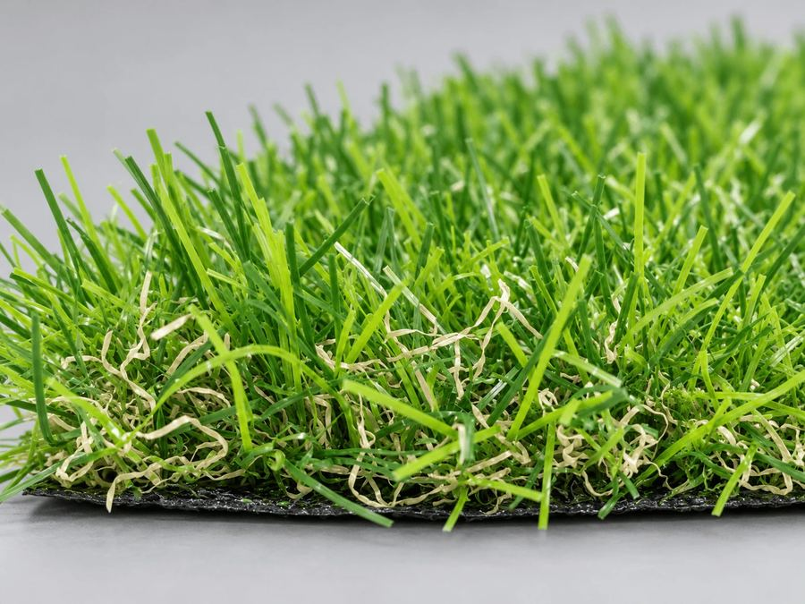

Modelo Real 30 mm · garantia de 12 meses
Grama sintética Real 30 mm
Dois tons de verde e fios cor de palha entre as fibras. É o modelo que imita gramado natural — a palha faz o trabalho que o verde sozinho não faz, porque gramado de verdade nunca é de uma cor só.
A partir de R$ 24,20 o m²

Fibra da Real 30 mm vista de perto.
Onde se aplica
Para que tipo de espaço esse modelo foi feito.
- Jardins residenciais
- Áreas de estar e lazer
- Entorno de piscina
- Áreas gourmet
- Fachadas e paisagismo
- Espaços de contemplação
Ficha técnica
- Altura do fio30 mm
- AcabamentoDois tons de verde e fios cor de palha
- Garantia12 meses contra defeitos de fabricação
- UsoInterno e externo
Os três modelos
- 12 mmBaixo e compacto
- 20 mmIntermediário
- Real 30 mmDois tons de verde e fios cor de palha
Quanto comprar
Calcule a metragem do seu espaço.
A grama é vendida por m², mas vem em rolo de largura fixa — então a quantidade a comprar depende de como as faixas cobrem a área. A calculadora mostra as faixas, as emendas e a sobra de corte.
Por que não é só a área dividida por 2?
Recortes, canteiros, degraus e áreas irregulares mudam a conta. Se o seu espaço não é um retângulo, envie as medidas e uma foto — nossa equipe calcula a quantidade e indica o modelo adequado para a aplicação.
Antes de decidir
Dúvidas sobre escolha e instalação.
Qual a melhor altura de grama sintética?
Qual a diferença entre gramas de diferentes alturas?
Pode instalar sobre cimento?
Pode instalar diretamente sobre terra?
A água da chuva escoa?
Outros modelos